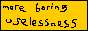

Writing your first Sveltekit app
Preamble (aka tl;dr 1 of 2)
My goal of the moment is to get some sort of gig as a web developer so I can work remotely and get more and more into libertarianism until nobody wants to hang out with me anymore.
One of the requirements, according to the internet, is to create a lot of bullshit, copy-paste style content that thousands of other people have written but better.
So here goes.
Get a modem and a Geocities account
My adventure begins somewhere around 1995, when the internet sort of sucked and no one really knew what it’s deal was. We got a computer that had an icon that said “Internet” and that was great. I was able to use my couple-of-dozen kilobauds per second of transfer speed to get myself a Geocities account. Archive link. It sucks multiple types of shit and tries to download a Blink 182 MIDI file when you view it. It had a guestbook. A sad, sad guestbook.
I was interested in creating website stuff, but had no gdf clue how. So I applied to the “New Media” program at a semi-local university and failed to gain acceptance.
Say “fuck it”
When life hands you lemons, do something else.
–Glarg Barbidov
At this point, become a bike messenger in a major metropolitan area for a while. It might be the best job you ever have. Working outside, not paying taxes on your income, life is good.
See the world
Head to Austrlia for a year. Pick mangoes. Surf. Buy a camper van whoms engine seizes the next day leaving you out $1500 that you really can’t afford. Bartend in a ghost town.
Create content
For a while there were the blogs called “E/N” blogs, or everything/nothing. You know, like this one. No clear objective, just some idiot pouring their brain into a keyboard for kicks and for a few laughs with their friends. We didn’t lol in those days. I still don’t. I made one where I created each blog post in it’s own HTML file, dilligently copying and pasting from the previous HTML file, and then adding the new blog to my list of blogs.
In retrospect it makes me so angry that I did things this way. There had to have been some sort of easier way, even at this point, no? Even if I had a /cgi-bin/ directory? Remember those? When computer graphics started appearing in movies and people said the cgi of a movie was good/bad I just thought “common gateway interface.” I do a lot of things weird, I think. I feel like this is almost as bad as “hold me closer, Tony Danza.”
Oh hey, almost forgot, there’s an archived version Unfun as well!
Remember when your website had a button?
This was mine –>  Yes, there’s a hand-drawn weiner.
Get educated
A four-year degree in Environmental Chemistry with pretty much nothing to do with webdev is what you think will be a good use of your time. Oh hey but on the plus side I was elected Editor-in-Chief of a campus publication and got to lead people and design a product, along with promotional pins! Everyone loves pins! Well, they did in 2007 and they still should. </ oldManMode >
Feel inspired that you are actually good at something. Good at science. You will change the world someday!
Get more educated
And make sure you go to the opposite side of the country to do so. Can’t really complain too hard about this one, got to sail on a Coast Guard icebreaker (twice!), snowboard lots, caught crabs (on a beach, not the yuck kind) (no judgment) and did a decent amount of snowboarding and downhill mountain biking. Create a pretty crummy website for your research group that never really gets used.
Along the way you can learn a bit of javascript but not so much to be really useful with anything.
Feel a bit crushed that your love of science actually doesn’t mean jack shit because there are 350 million other people intent on changing the world and you’re just kinda.. ..in there somewhere, not really excelling at anything. The path of least resistance has become a forest of lots of resistance.
Find a job doing something meh
Work in a lab! Be part of a union! This isn’t so much changing the world as.. ..being a part of the world.
You can read all the news you want, and get angry about it! But all you really do is vote every 2 years or so (provincial and federali elections) and that’s about it, bub.
Also what the shit, how have twenty years passed since that Geocities nonsense?
You know what, screw it. The world effing sucks (in some ways) and it’s not my problem anymore. I’ve been riding to school/work for most of my life, I hang-dry my clothes, I use Amazon infrequently. I just want to get a job doing something I don’t hate and spend the rest of my time biking and laying on the floor with dogs.
*googles how to do code writing*
*reads automate the boring stuff*
Used Miguel Grinberg’s Flask Megatutorial to learn enough Python/Flask create a mountain bike trail status crowdsourcing website called Radriders. It never gains any traction. Boo.
Interlude
Yeah, then this whole global pandemic thing happened. WORK FROM HOME?! I work in a lab and didn’t really get much of a break during the pandemic.
In fact, my experience was much, much worse.
I had some sort of mental breakdown/burnout and I was honestly worried that I had broken my brain and I would never be able to absorb as much complexity as an episode of Friends has to offer. It was bad. Thank the good lord for youtube videos of train rides in the rain. Seriously. I’ve watched that train video like 30 times. That’s exactly the level of complexity my brain was capable of handling.
Despite my recent claims to the contrary, we got a few sparse days of working from home. I had learned a bit of javascript along the way, so I decided to tackle the course from the University of Helsinki entitled Deep Dive Into Modern Web Development. It taught me React+Redux, Express, MongoDB and a bit of Typescript.
Opportunity!
My work hired some other person to create a website that has apparently been in the works for eons. Well, maybe only one eon, I don’t want to be dramatic. He quit because some bank was going to pay him mad skrilla to do something for them. I feel sorry for the bank because I get hired on for the role and his code is.. ..uh.. ..fine. The directive from the powers-that-be is that this project needs to be done “like yesterday.”
I convince my boss that we’re better off scrapping his codebase using Django Rest Framework and React and just going with straight-up Django. I figure this will eliminate any of the complexity involved with passing info between two different frameworks and I am super-right. The site launches months later and is so-far well-received.
During this time also developed another app using Django to allow another group of clients to display Animal Disease Dashboards for veterinarians and researches in the area. Simple but effective.
Python sucks
I rescind that third-level header, python doesn’t sucks. Python’s really great for somethings, but I’ve already been effed in the ay by expecting an integer and being given a string, and when comparing 40 and “40” having the application say “no these are obviously not the same *flips over and dies*” and it’s not ideal. I decide I want type-safety. Also everyone on the internet talks trash about React and I’ve heard good things about Svelte and the internet seems to be mildly infatuated with it so let’s have a look! Hey, I like it!
They have this other weird thing called “Sapper” and I don’t really know what it is so I just monkey around with Svelte a bit.
Enter Sveltekit
Sapper grew up and became SvelteKit and all of a sudden this framework is the real deal. It’s like if React got ran over with a Roomba and now everything is just easier and nicer and better and it takes a lot less time to do what I want. I’m a pretty hardened nerd by this point, so I do my best to learn from the official documentation and then quickly consult youtube (hey, twice in one post!) for some tutorials because I get lost quickly. And whoa, it’s really great. And easy. ish. Nothing easy is worth doing. *resists tempation to make crass joke, but still needs you to know he knows it’s there*
Creating the website
My idea was to create a microtweeting website, which I have mentioned before. So then once you have installed Sveltekit and learned how to use it, just program the functionality you need. Easy! Also if you want it to be type-safe, write it in Typescript! If you get stuck there are literally a billion tutorials out there, probably actually an underestimate.
I used Prisma for an object-relational model (ORM) and it was awesome, use Prisma! (yo Prisma, send me some stickers or something!)
Hire Me!
If anyone wants to offer me any sort of remote job using Sveltekit and pay me a decent salary I will jump on it. I am great to work with, learn quick and good, also good at riding bikes!
Here’s some shit I can computer do:
- HTML
- CSS (incl. SASS, tailwind)
- Javascript (but not Java)
- React, Redux, Sveltekit
- Python/Django/Flask
- Video Editing
- Set up an nginx server
- Svelte and Sveltekit
- Typescript
- Write a mean SQL query
- Design/normalize relational databases
- Markdown!
- Unit tests
Postamble (aka tl;dr 2 of 2)
I wouldn’t normally include a postamble but here we are.
So the trick is to work on various things that aren’t web development, then spend a few years learning javascript and python and eventually Typescript. Once you learn React you will be excited to learn any other web development framework that isn’t React. At this point, learn Sveltekit and create your application!
Make sure to host it on the Raspberry Pi in your basement or the hardcore nerds won’t respect you.
Thanks for reading make sure to smash that like button and then go grab a beer, you’ve earned it!